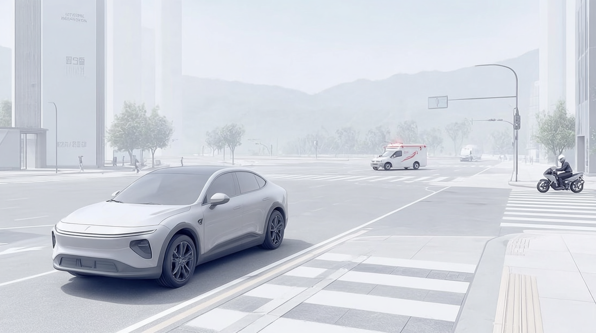
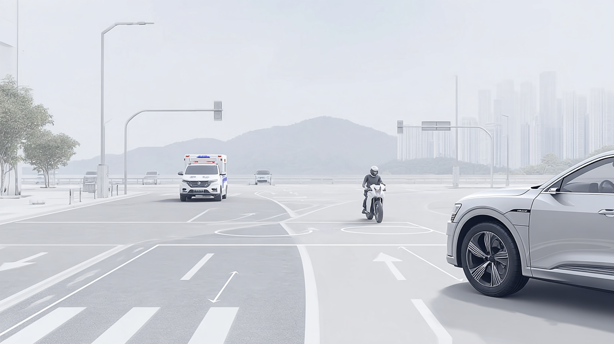
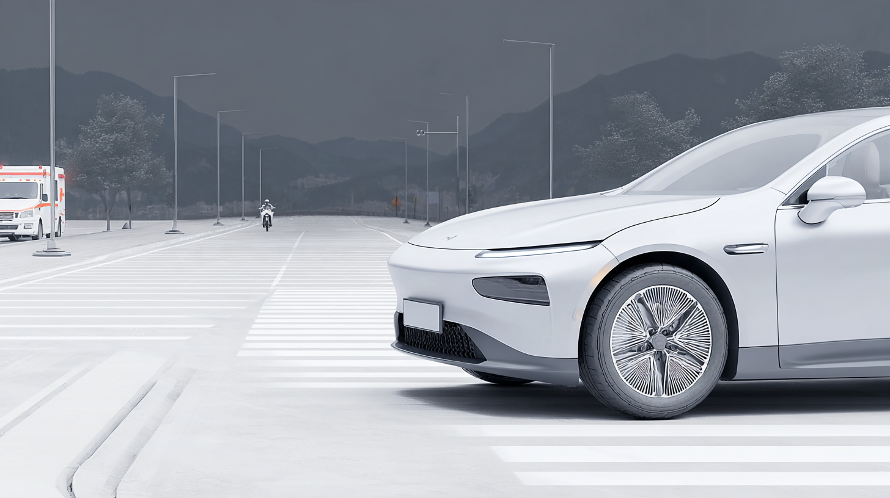
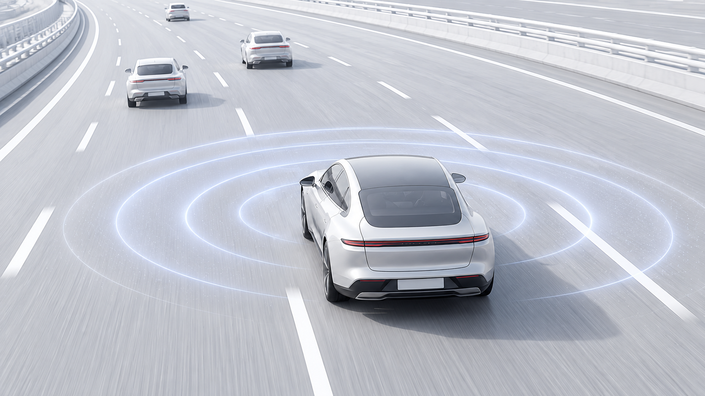

우리가 정의한 운전자,
User Definition · 사용자 정의
들리지 않는 도로 위에서도,
스스로 운전하는 사람.
Scroll
다들림의 사용자는
시선과 손끝으로
도로를 읽는 운전자입니다.
그들의 시선 으로 바라보는 것.
청각장애 운전자도 일상 속에서 직접 차량을 운전하며
다양한 도로 환경과 주행 상황을 스스로 경험합니다.
출퇴근, 약속, 여행처럼 일상의 이동을 스스로 계획하고
목적지까지 주체적으로 이동합니다.
주행 중 주변 차량과 도로 상황을 확인하고,
변화하는 상황에 맞춰 필요한 판단과 대응을 직접 수행합니다.
Context
소리가 먼저 도착하는 순간,
운전자에게는 닿지 않습니다.
구급차가 교차로로 들어올 때
사이렌은 멀리서부터 들려오지만, 신호가 바뀌어도 접근을 알아채기 어렵습니다.
이륜차가 옆으로 다가올 때
소리로 먼저 알 수 있는 접근을, 미러와 창밖을 번갈아 보며 직접 찾아야 합니다.
대형차가 차로를 바꿀 때
짧게 울린 경적 하나를 놓치면, 양보와 판단이 한 박자 늦어집니다.
멀리서 긴급차량이 다가올 때
길을 터야 하는 순간을 늦게 알아채, 주변 차량의 흐름 속에서 혼자 멈칫합니다.

사이렌 · 오른쪽 앞
엔진음 · 앞 오른쪽
경적 · 왼쪽 옆

사이렌 · 왼쪽 멀리
앞차의 경적과 주변 소리를,
앞유리 위에서
눈으로 봅니다.
눈으로 봅니다.
사이렌과 경고음을,
시선을 내려
화면으로 확인합니다.
화면으로 확인합니다.
방향지시음과 알림음을,
핸들을 잡은
손끝으로 느낍니다.
손끝으로 느낍니다.
들리지 않는 만큼,
시선과 손끝으로
확인합니다.
운전자의 시선과 손은,
이미 이곳에 머물러 있습니다.
앞차의 경적과 주변 소리를,
앞유리 위에서
눈으로 봅니다.
눈으로 봅니다.
사이렌과 경고음을,
시선을 내려
화면으로 확인합니다.
화면으로 확인합니다.
방향지시음과 알림음을,
핸들을 잡은
손끝으로 느낍니다.
손끝으로 느낍니다.
Emotion
운전 중 사용자는
이런 감정을 경험합니다.
-
01 TENSION
긴장
언제 울릴지 모르는 소리에 대비해, 주행 내내 주변을 살핍니다.
-
02 FOCUS
집중
소리 대신 눈으로 모든 것을 확인하느라, 시선이 쉴 틈이 없습니다.
-
03 ISOLATION
고립
모두가 들은 소리를 나만 모른 채 지나가는 순간이 생깁니다.
Needs
그래서, 이 운전자에게 필요한 것.

-
WHERE · HUD
어디서
소리가 들려오는 방향을,
시선이 머무는 앞유리 위에서. -
WHAT · DISPLAY
무엇이
사이렌인지 경적인지,
소리의 종류를 화면에서 바로. -
HOW URGENT · HANDLE
얼마나
위험의 크기를,
핸들을 잡은 손끝의 진동으로.
듣지 않아도,
먼저 아는 운전자.